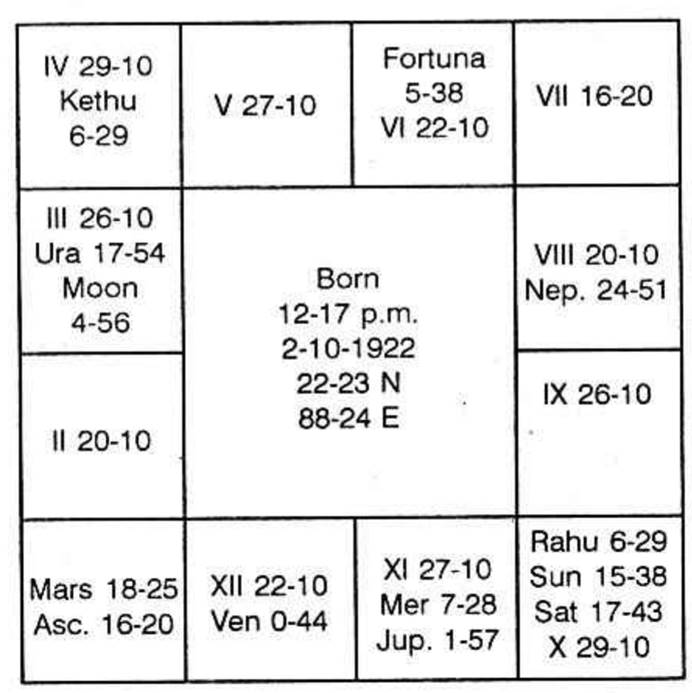

Various books written by western authors are referred, especially, "The message of the stars" written by Max Heindel and Augusta Foss Heindel, published by L N Fowler & Co, Lilly's Astrology Zadkiel, Sepahriel, Llewlyn George, Alan Leo, etc. How the information collected there in, is to be made use of while applying Krishnamurti Padhdhati is given below:
He says
“Never tell a patient a discouraging fact
Never tell him when impending crisis are due
Never predict sickness at a certain time
Never, never predict death”
He adds that it is a grave mistake, almost a crime to tell sick persons anything discouraging, for it robs them of strength that should be husbanded with, the utmost care to facilitate recovery. He is of opinion that it is a well-known fact that many students of the medical colleges, feel the symptoms of every disease they study and suffer greatly in consequence of auto-suggestion, but the ideas of impending disease implanted by one in whom the victim has faith is much more dangerous. Therefore it behooves the medical astrologer to be very cautious. If you cannot say any thing encouraging, be silent.
Planets: Which part of the body and disease do they indicate?
Sun: Governs the vital fluid in the body, the heart, the pons varolii, etc. Radiant health is given by Sun.
Moon: Rules the stomach, the uterus, the ovaris, the lymphatics, the sympathetic nervous system, the synovial fluid. It indicates whether one can have menstrual troubles, uterine and ovarian afflictions, dyspepsia, eye trouble, lunacy, and diseases connected with breast.
Mars: governs the red bone - marrow, haemoglobin, red blood corpuscles which carry food to various parts of the body and help in throwing out the waste. It also governs the genitals. Accidents, burns, gunshot injuries, surgery, are shown by Mars.
Mercury: Pulmonary system, respiratory diseases, motor segment of the spinal cord, vocal cord, locomotor functions, ataxia, nervous disorders, deafness.
Jupiter: Liver, glycogen, adrenals, arterial circulation, fatty degeneration of the muscles, tumours, cancer, morbid growths, enlargement of organs, waste of sugar, albumin in the urine, blood poisoning, apoplexy.
Venus: Throat, kidneys, lack of exercise, sedentary habits. poor circulation of blood, tonsillitis, venereal diseases.
Saturn: Obstrution, atrophy, gall bladder, bones, painful rheumatism, teeth, mottled enamel, fluoride intoxication, stiff bone, dullness in the peristaltic action thereby poor digestion bruises, colds, chronic diseases, fear complex, never believes that he will be cured. Always pessimistic, fracture.
Thus what each planet denotes is given. So, one is to note which planet will cause the disease, in which sign it is, and in which sign the lord of the constellation of the planet, which is the significator of both the first and the sixth houses is. Considering all these, one has to come to a decision and then predict the nature of the disease from which one will suffer; then calculating the period when the significators of one and six operate, one is to give the time when one will fall ill. Similarly one has to note down when the eleventh house significators will operate. If the 11th house significator is also the significator of the fifth house, one will surely have the cure for the disease from which one suffers. Unless the sub sub period of the significator of the 11th house operates, following the period of the disease, immediate cure is denied, and one is to wait till the significator of the 5th and 11th begin to operate.
Nature of the diseases: The ascendant and the significators of the ascendant will indicate whether one can maintain good health or suffer from any disease or will have rapid or slow recovery from the ailment or succumb to it.
The sixth house denotes the upset of the health, the disease from which one will suffer, its nature and duration of the disease. It is not necessary that one should suffer from any one variety of the disease in his lifetime whenever he falls ill. The nature changes according to the significator of the disease and the period running. Normally there will be a few significators of the sixth house. All cannot cause diseases unless the same significator of the sixth house is also significator of the first house. 6th house indicates not only disease but also debts, difficulties, separation from the partner, etc. Hence to definitely predict that one will suffer from some disease, one should note whether the significator of sixth house is also connected with the ascendant. If it is connected with the second and not the first, then it indicates either entering into service or borrowing money. If it is connected with the second and also the 12th, it shows that he would have lost what he borrowed or repaid the loan already taken, etc. But if the significator of the sixth house is also the significator of 1 and also 12 one will be confined to bed or isolated, i.e. hospitalised
The fatal disease is shown by the significator of the 8th house. One may suffer from various diseases during his life time. But that which would be the last disease from which one suffer, is indicated by the sub-lord of the 8th cusp. Twins may be born. The lagna and also the 8th cusp may be in the same sign and star for both of them. But the nature of the death differs. How? Which can explain the reason for this, except the sub-lord of the 8th? One of them meet with accident. The other passes away on another date after suffering from some other disease. The only method by which one can decide is only by judging the sub-lord of the 8th cusp as the cusps alone change within the few minutes interval in their birth time. Therefore one should note the nature of the diseases as explained below.
Note the sub-lord of the 6th cusp. This need correct moment of birth. If it is not available, then if you want to know the sub of the sixth, you take the ruling planets at the moment when you have the urge to put the query. Mysteriously God will help you by eliminating the previous and the next sub to the one which you have to select.
Now a gentleman has entered my room in Delhi. His question is whether there will be any relief from the disease from which he is suffering. To day it is Saturday. The constellation in which Moon is transiting is Poorvashada, governed by Venus in the sign Sagittarius, owned by Jupiter. This shows that the body gets emaciated due to passing away off sugar in the urine. Hence I decided that it should be diabetes. When I asked the gentlemen whether he suffers from diabetes, he said 'yes'. His horoscope also indicated the same disease. It is as follows:

Now let us see the 6th cusp of the native. It is in Venus sign, Moon star and Venus sub. Combination of Venus, Moon is judged for profession as one who deals in milk, petrol or syrup. Hence for disease we have to take that he passes not urine but syrup-like fluid. It should be clearly stated as diabetes as Moon is connected with the 8th house by owning it and 8th house shows micturition-passing urine. If I want to note the sub from the ruling planets it can be seen that it may be Jupiter or Saturn or Venus sub as today it is Saturday and the star is Poorvashada. The lord of the star is stronger than the lord of the rasi which is stronger than the lord of the day. Therefore the divine grace is ever there to fix correctly that which you want by taking the ruling planets at the moment of judgment. Therefore whenever you want to find out the disease of a person, note the sub-lord of the sixth cusp; find out in whose constellation it is deposited. Find out the sign where the lord of the star was at the moment of birth or at the time of query and also the sub-lord of the sixth both put together to give the clue.
In the above horoscope the sub-lord is Venus. It is in Scorpio, the 8th sign of the zodiac and in a watery sign indicating sexual organ and excretion from the body. Venus was in the constellation of Jupiter in Libra. Libra is for kidney, bladder etc. How clear it is, is to be judged by the readers themselves. The native of this chart found out that he had unusual thirst in the night and when he sent his urine to the clinical laboratory, he found that there was sugar in the urine. Thus every reader of my magazine or the book should become a capable astrologer who could diagnose the disease with least effort even without seeing the patient. It is the chart erected for the moment of judgement which reveals. Where is the necessity for the patient to visit the chamber of the astrologer. For a medical officer, he should see patient, hear his case, do all the possible tests and arrive at a correct diagnosis. For an astrologer it is easy to eliminate many of the suspected ones and pitch upon the disease correctly.
Pathogenic effects of the twelve signs of the Zodiac:
Aries: Reacts upon the head, producing headaches, neuralgia, coma, trance, diseases of the brain and cerebral haemorrhage, insomnia, tendency to inflammatory diseases, pains etc.
Taurus: Diphtheria, croup, apoplexy, goitre, diseases of the cerebellum, cervical vertebrae. Planets deposited in Taurus will oppose the sign Scorpio. Hence they also cause venereal diseases, piles, fistula and constipation. Irregular menses and troubles thereby.
Gemini: Pulmonary diseases, oesinophilia, dry cough, pneumonia, bronchitis, pleurisy, asthma, inflammation of pericardium, affections of the hands, and tuberculosis.
Cancer: Pain in the stomach, gas trouble, indigestion cough, hiccough, dropsy, melancholia, hypochondria, hysteria, jaundice, gall stones.
Leo: Regurgitation of blood, palpitation, aneurism, feeling giddy, faintings, spinal meningitis, curvature of the spine, arterio sclerosis, angina pectoris, anaemia, hydraemia.
Virgo: Tapeworm, roundworm, hook worm, malnutrition, peritonitis interference with the absorption of the chyle, typhoid, cholera, appendicitis, loose motion, Vitamin B deficiency.
Libra: Polyuria, suppression of the urine, inflammation of the uterus, bright's disease, lumbago, rheumatic pains, eczema, skin diseases, affection of the vasomotor system, kidney, Appendicitis, Hernia.
Scorpio: Affection of the bladder, coliform infection, trouble in the urethra and generative organs, rectum, colon, the prostate gland, nasal catarrh, adenoids, trouble in the womb, ovaries, venereal diseases, irregularities of the menses, leucorrhoea, renal stone.
Sagittarius: affections of the hips, thighs, femur, ileum locomotor ataxia, sciatica, rheumatism, diseases in the hip. Also pulmonary troubles, fracture of collar bone, varicose veins.
Capricorn: Affects the skin, the patella, kneecap and the knee, stomach, eczema, crysipelas, leprosy, leucoderma, digestive disturbances, rheumatism, chills gout, neuralgia, melancholia, blood disorders.
Aquarius: Affects the ankles, the limbs, varicose veins, sprain in the ankle, dropsy, irregularity of the functioning of the heart, skin and eye diseases.
Pisces: Affects the feet and the toes. It also affects the intestines. Deformities of the feet, dropsy, delirium tremers due to drugs, addicted to the drinks and thereby complications.
If Sun would have been the sub-lord of the 6th cusp and is the significator of the houses 6 and also 1, or if the significator of 6 is also the significator of 1 and is deposited in the constellation of Sun and if Sun would have been in the following signs then the native will suffer from any of the following types of diseases.
Aries (Sun): Aphasia, loss of conscience, brain fever, cerebral haemorrhage, meningitis, cerebral anaemia or congestion of the bloods, faintings, headaches, thrombosis etc.
Taurus (Sun): Quinsy, diphtheria, polyps of the nose, eye trouble
Gemini (Sun): Pleurisy, Eosinophilia, bronchitis, hyperaemia of the lungs.
Cancer (Sun): anemia, dropsy, dyspepsia, gastric ulcer.
Leo (Sun): Palpitation of the heart, backache, spinal affections and eye trouble.
(Virgo) Sun: No proper digestion and assimilation, peritonitis, typhoid, dysentry.
(Libra) Sun: Bright's disease, eruptions of the skin, boils.
Scorpio (Sun): Renal calculus, genital system disturbed, urinary trouble, menstrual difficulties, affections of the uterus and ovary.
Sagittarius (Sun): Sciatica, paralysis of the limbs, pulmonary diseases.
Capricorn (Sun): Rheumatism, skin affection, digestive disturbances.
Aquarius: Varicose veins, dropsy, poor circulation, palpitation of the heart.
Pisces (Sun): Perspiration of the feet, intestinal troubles typhoid fever.
If Moon would have been the sub-lord of the 6th cusp and is the significator of the houses 6 and also 1, or if the significator of 6 is also the significator of 1 and is deposited in the constellation of Moon and if Moon would have been in the following signs then the native will suffer from any of the following diseases
Aries (Moon): Insomnia, headache, lethargy and weak eyes.
Taurus (Moon): Sore throat, eye trouble, also menstrual complaint.
Gemini (Moon): Catarrh of the lungs, asthma, bronchitis, pneumonia, rheumatism in the arms, sprain and pains in the shoulders.
Cancer (Moon): Chronic ailment in the stomach leading to Cancer, dropsy, obesity, bloating digestive disturbances, epilepsy.
Leo (Moon): Backache, disturbed circulation, convulsions, heart trouble, eye defect.
Virgo (Moon): Bowels disorder, abdominal tumours, dysentery, peritonitis.
Libra Moon: Bright's disease, abscess of the kidneys, uraemia, headache, insomnia.
Scorpio (Moon): Disturbed mensus, bladder troubles, hydrocele, genito-urinary disturbances, throat troubles.
Sagittarius (Moon): Affections of the blood, hip disease, femur fracture, asthma.
Capricorn (Moon): Rheumatism, lack of synovial fluid, skin eruptions, poor digestive disturbances.
Aquarius (Moon): Varicose veins, ulcers of the leg, dropsy, hysteria, fainting and heart trouble.
Pisces (Moon): Either drinks much or ever used to take drugs. Tender feet, varieties of disorders in the abdomen.
If Mars would have been the sub-lord of the sixth cusp and is the significator of houses 6 and also 1 or if the significator of 6 is also the significator of 1 and is deposited in the constellation of Mars and if Mars would have been in the following signs, then the native will suffer from the following types of diseases.
Aries (Mars): Sunstroke, cerebral haemorrhage, congestion, thrombosis, brain fever, delirium, shooting pain in the head, insomnia, wounds or boil in the head, inflammation of the kidney, renal haemorrhage, renal calculi.
Taurus (Mars): Mumps, enlarged or inflamed or septic tonsils suffocation, adenoids, diphtheria, polyps, nose-bleeding, goitre, inflammation of the larynx, excessive menstrual flow, scalding urine, venereal ulcers, enlargement of the prostate gland, stranguary.
Gemini (Mars): Haemorrhage of the lungs, pneumonia, bronchitis cough, wounds and fractures in the arms, collar bone, fracture in the femur, sciatica.
Cancer (Mars): Inflammation, ulceration, haemorrhage of the stomach, dyspepsia.
Leo (Mars): Muscular rheumatism, especially in the back, enlargement of the heart, palpitation, pain in the heart suffocation, fainting, inflammation of the pericardium.
Virgo (Mars): Typhoid, inflammation of the bowels, peritonitis, worms, diarrhoea, cholera, ventral hernia, appendicitis.
Libra (Mars): Inflammation of the kidneys, excess of urine, haemorrhage of the kidneys, renal stones, brain fever, sunstroke, pains in the head.
Scorpio (Mars): Excessive menses, profuse bleeding, scalding urine, gravel renal stones, inflammation and ulceration of the uterus and ovaries, vagina, urethra, enlargement of prostate gland, stricture and strangury, tonsils, larynx, nosebleeding.
Sagittarius (Mars): Fracture of the femur, dislocation, sciatica and ulcers of the thighs, pneumonia, bronchitis cough.
Capricorn (Mars): Carbuncles, erysipelas, smallpox, chicken pox, measles, pimples, itches, inflammatory skin diseases, dyspepsia, ulcerated stomach.
Aquarius (Mars): Varicose veins, fracture of the leg, blood poisoning, heart failure, fainting, palpitation of the heart.
Pisces (Mars): Deformities of the feet, accidents to them, corns bunions and perspiring feet, ventral hernia, inflammation of the bowels, diarrhoea.
If the sub-lord of the 6th cusp is Mercury or if Mercury is significator of the sixth house and also the significator of the first or if the significator of the sixth and also the first house be deposited in the constellation of Mercury and if Mercury would have been deposited in.
Aries (Mercury): Brain fever, headache, vertigo neuralgia nervous disorders of the kidney, lumbago.
Taurus (Mercury): Stuttering, hoarseness and deafness, nervous affections of the genitro-urinary system.
Gemini (Mercury): Gouty arthritis, bronchitis, asthma, asphyxiation, pleurisy, nervous pain in the hip.
Cancer (Mercury): Nervous indigestion, phlegm, flatulence drunkenness.
Leo (Mercury): Pain the back, fainting, palpitation of the heart.
Virgo (Mercury): Flatulence, short breath, nervous debility.
Libra Mercury: Suppression of the urine, renal paroxysms, lumbago vertigo, nervous headache, eye trouble.
Scorpio Mercury: Pain in the bladder and genitals, menstrual trouble, stuttering, deafness.
Sagittarius (Mercury): Pain in the hips and the thighs, cough, asthma, pleurisy.
Capricorn (Mercury): Rheumatism, pain in the knee, difficulty, to bend, pain in the back, skin disease, melancholy, nervous indigestion, flatulence.
Aquarius (Mercury): Shooting and gnawing pains, varicose veins, corrupt blood, palpitation and neuralgia of the heart.
Pisces (Mercury): Gout in the feet, general weakness, lassitude, worry, tuberculosis, deafness.
(Similarly for Jupiter, Venus and Saturn we have to predict)